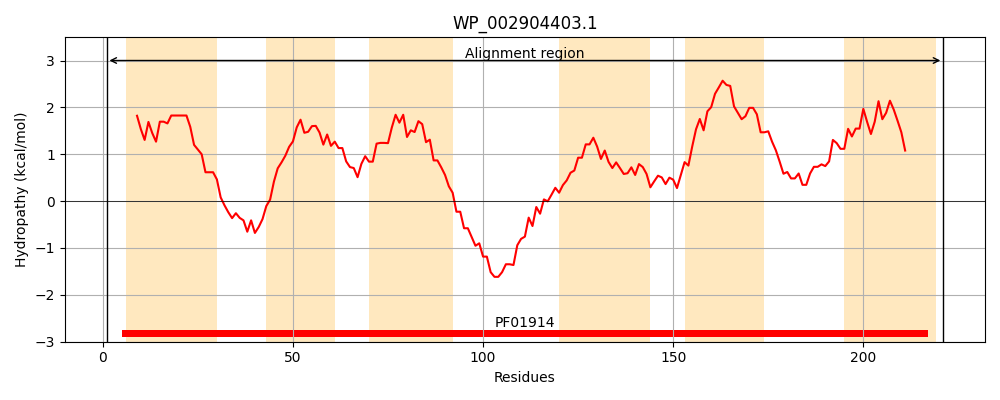
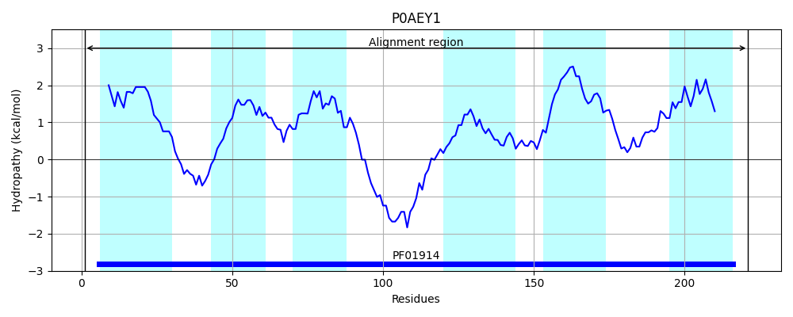
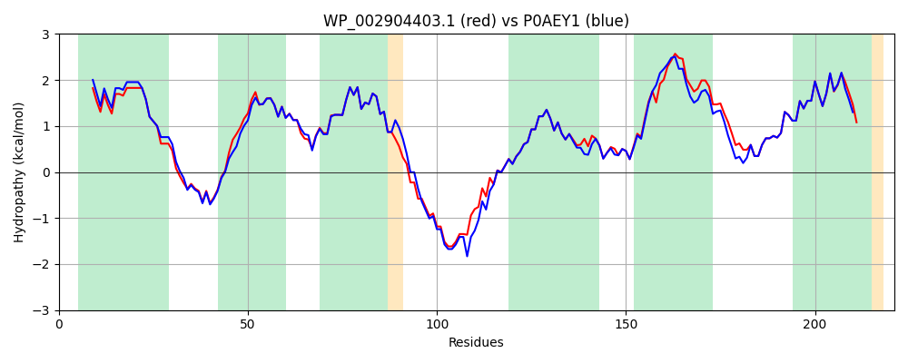

Hit Accession: P0AEY1
Hit TCID: 2.A.95.1.1
Hit Description: gnl|BL_ORD_ID|8800 gnl|TC-DB|P0AEY1|2.A.95.1.1 Multiple antibiotic resistance protein marC - Escherichia coli.
Mach Len: 221
e:0.000000
Query TMS Count : 6
Hit TMS Count: 6
TMS-Overlap Score: 6.600000
Predicted Substrates:CHEBI:22582;antimicrobial agent
BLAST Alignment:
Score: 945 , Bit scores: 368 bits, E-value: 1.9e-131, Alignment length: 221, Percentage identity: 85
Query: 1 MFDLFKAIGLGLAVLLPLANPLTTVALFLGLAGNMNNAERNKQALMASVYVFAILMVSWYAGQVVMNTFGISIPGLRIAGGLIVAFIGFRMLFPQQKAHDSMEAKIKSEELQDEPTANIAFVPLAMPSTAGPGTIAMIISSASTVKHGVDFPEWVVLAAPPIIFLLLGVILWACLRSSGAIMRLVGKGGIEAISRLMGFLLVCMGVQFIINGVLEIISTWH 221
M DLFKAIGLGL VLLPLANPLTTVALFLGLAGNMN+AERN+Q+LMASVYVFAI+MV++YAGQ+VM+TFGISIPGLRIAGGLIVAFIGFRMLFPQQKA DS EAK KSEEL+DEP+ANIAFVPLAMPSTAGPGTIAMIISSASTV+ F +WV++ APP+IF L+ VILW LRSSGAIMRLVGKGGIEAISRLMGFLLVCMGVQFIING+LEII T+H
Sbjct: 1 MLDLFKAIGLGLVVLLPLANPLTTVALFLGLAGNMNSAERNRQSLMASVYVFAIMMVAYYAGQLVMDTFGISIPGLRIAGGLIVAFIGFRMLFPQQKAIDSPEAKSKSEELEDEPSANIAFVPLAMPSTAGPGTIAMIISSASTVRQSSTFADWVLMVAPPLIFFLVAVILWGSLRSSGAIMRLVGKGGIEAISRLMGFLLVCMGVQFIINGILEIIKTYH 221 | Protein Hydropathy Plots: |
|---|
|  |  |
Pairwise Alignment-Hydropathy Plot:
|
|---|
|  |